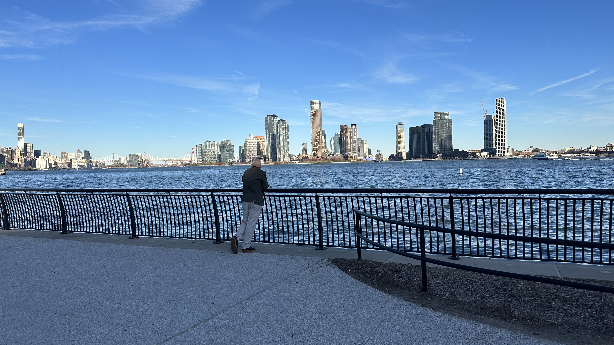

Reflection River

November 20th 2023 02:06pm
Primary.
11/21/2023
Have you ever watched a play? Watched a play and wondered how they game? Ok, I mean, what's going on backstage? Is it chaos? Or is everyone calm, reading their lines? I think about the stage a lot. As audience, the energy I feel from the stage always makes me want to jump out of my seat, run and get on stage, join the act, join the dance. But, I never stop thinking about what's going on backstage, what's the energy like there, what door do they walk through and change their face, what if we could see backstage. Lots of questions but then again that's life write, putting on a strong face [sometimes] and just go out there, we're on a stage all the time, there's akways an audience too, but feels like we're always backstage, I don't know what's primary?
The one stage I would not want to be on know would be the cricket world cup final, I would be scared to be on that stage, the pressure from the all blue stadium, with lines of yellow [Austrailia], us from around the world hooked our screens, no matter what time, their families, their friends, all the big names, the freakin' prime minister, THE PRESSURE IS REAL. No backstage to hide, no masks to cover their face, raw. Just like the other 1.408 billion Indians, I held my breathe every time they threw a ball. out out out, come on. out I didn't even follow the entire season, but I'm here now holding my breathe. We didn't win the 11th but I envy the power they have, the strength they have to be on the stage with an audience as big as the most populated country in the world, This one's to you team blue!
Plugged in my headphones, started walking...
241/4
Agape was the name they bared
and blue to say they shared.
words that have always stayed in my head.
That night I decided not to stay in bed
Ten and one and more to come,
night here, day there,
all eyes on, someone said,
the king will come.
He thinks he's alone,
but the stadium burns in blue,
standing tall,
we're here for you.
Watched the sun rise,
the sky was blue,
our hearts too,
eleven and out, that doesn't feel true.